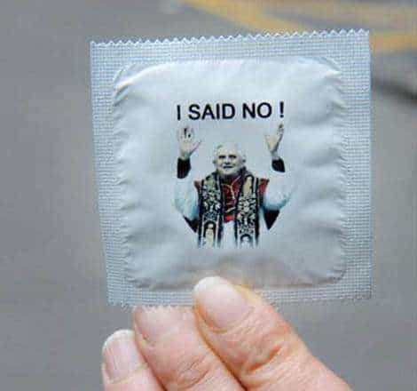
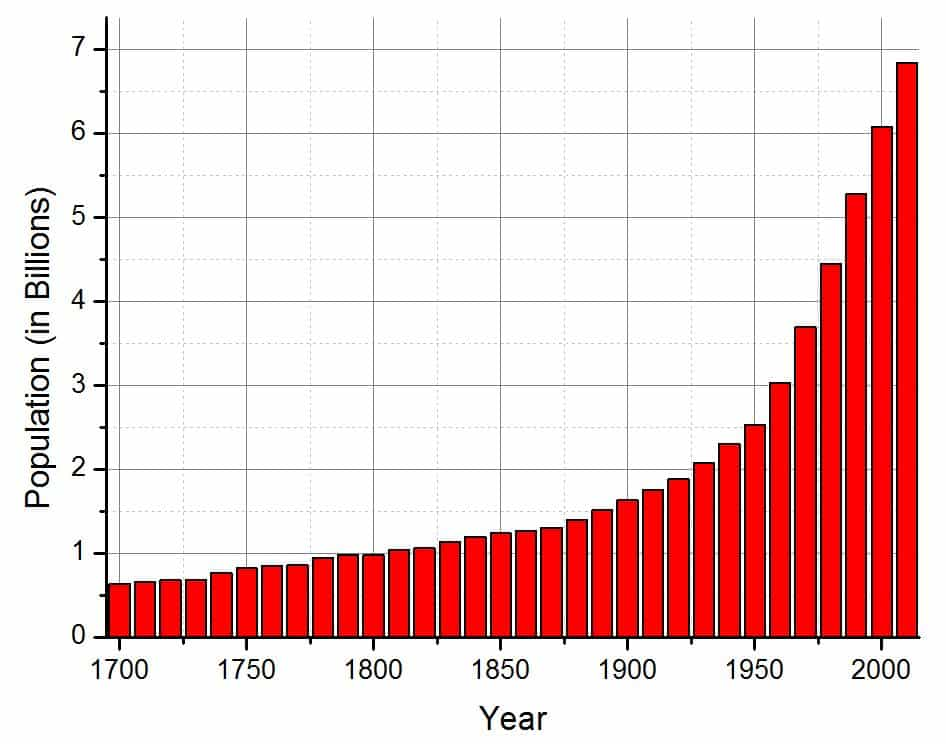

is an aspiring philosopher king, living the dream, travelling the world, hoarding FRNs and ignoring Americunts. He is a European at heart, lover of Latinas, and currently residing in the USA.


On July 25, 1968, Pope Paul VI published his seventh and final encyclical titled Humanae Vitae (Of Human Life), subtitled On the Regulation of Birth. It addressed the question of artificial contraception, the importance of marriage, the role of women in society, amongst the growing problem of rapid population growth.
In 1960, the first oral contraception pill was released. “The Pill,” as it became to be known, began the sexual revolution, and is directly responsible for many of the societal problems today, from rampant divorce to high promiscuity to lack of happiness in both women and men.
Interestingly, while the pill is widely used in the west, less than 1% of women in the ethnostate of Japan take contraception pills. Their divorce rate, which has quadrupled since 1950, is still less than half that of the US.
The first encyclical addressing birth control was issued by Pope Pius XII in 1930. Titled Casti connubii “Of Chaste Wedlock,” it reaffirmed the sanctity of marriage, prohibited artificial birth control, and reasserted church authority over private life and civil governments in this realm.
While modern Republicans love to throw around terms like “sanctity of marriage” while flirting with their soon-to-be fifth wife, they ignore its meaning. Sanctity is holiness or sacredness. There is nothing holy or sacred about wifing up a girl who has been slammed by 100 other guys before you, even if you both manage to be loyal to each other. This type of union violates the sanctity of marriage, just as much–likely MORE– than gay marriage or any other weakening of the institution.
Pius XII reaffirmed that holy matrimony is a sacrament of the church, and supported the role of the wife as a homemaker, insisting that wives obey their husbands and husbands love their wives, as Christ loved the church.
Pius XII: No Ma’am!
I consider marriage and holy matrimony two completely different things. If a friend of mine wifes up a slut, goes to the courthouse, plunks down $35 and gets a marriage license, that is a marriage. If a man takes a virgin into the church, and they emerge as man and wife, as was the custom for 1,900+ of the 2,000 years of Christianity, then that is holy matrimony.
Due to scientific advances, including the oral contraception pill introduced in 1960, it was necessary for the church to reassert its position on marital and reproductive issues. Paul VI addressed four main issues.
A union all our ancestors had the opportunity to consummate
Holy matrimony is much more than a union of two people. Paul VI stated that:
It is a love which is total—that very special form of personal friendship in which husband and wife generously share everything, allowing no unreasonable exceptions and not thinking solely of their own convenience… Though this fidelity of husband and wife sometimes presents difficulties, no one has the right to assert that it is impossible; it is, on the contrary, always honorable and meritorious… Marriage and conjugal love are by their nature ordained toward the procreation and education of children
Opening Scene of Idiocracy: Responsible Family Planning
Responsible parenthood is exercised by those who prudently and generously decide to have more children, and by those who, for serious reasons and with due respect to moral precepts, decide not to have additional children for either a certain or an indefinite period of time
Responsible parenthood is thoughtfully planning and deciding when to have, or not have children. Ironically, even today, with the sanctity of marriage all but gone, and the disappearance of chastity, so many children are the products of accidental unplanned births, one night stands, or random hookups. These are all violations of responsible parenthood, no matter how much the single mother insists “My baby comes first!”

Let [responsible men] first consider how easily this course of action could open wide the way for marital infidelity and a general lowering of moral standards. Not much experience is needed to be fully aware of human weakness and to understand that human beings—and especially the young, who are so exposed to temptation—need incentives to keep the moral law, and it is an evil thing to make it easy for them to break that law. Another effect that gives cause for alarm is that a man who grows accustomed to the use of contraceptive methods may forget the reverence due to a woman, and, disregarding her physical and emotional equilibrium, reduce her to being a mere instrument for the satisfaction of his own desires, no longer considering her as his partner whom he should surround with care and affection.
If you ask me, Paul VI is either an omniscient genius, or had some experience with women. Here is the warning, plain as day, that predicted exactly what has happened in the 50 years since this work was published.
Contraception has increased the propensity of both men and women for not only marital infidelity, but for discreet sexual encounters outside the bounds of even a dating relationship. And men, myself, and many of the authors and readers here, increasingly see women as merely masturbatory aids. And indeed, the tragedy is that modern women have become little more than sexual objects good for one thing.
Everything therefore in the modern means of social communication which arouses men’s baser passions and encourages low moral standards, as well as every obscenity in the written word and every form of indecency on the stage and screen, should be condemned publicly and unanimously by all those who have at heart the advance of civilization and the safeguarding of the outstanding values of the human spirit.
We have an obligation to reject almost (((everything modern))).
Aside from the problems addressed above, birth control can be physically and medically harmful to women. It has been proven to cause vaginal dryness, low sex drive, hormonal imbalance, and even infertility. And yet it is allowed and encouraged, because it allows women to have no strings attached sex. Is it worth it?

The only major issue I have with the treatise is the issue of population control and eugenics. The burgeoning population was a major issue in 1960, and there are now over twice as many people on the planet. While this is a different debate, I would say that what is right for a Christian in a moral and healthy society need not be a rule universally applied everywhere on the planet.
A principle need not be universal for it to be considered good. Contraception would alleviate much suffering and poverty in Africa, and the dysgenic world we have created today is quite ungodly in my mind. It is possible to have a pro-eugenic society that rejects recreational contraception, but allows for it in cases deemed detrimental to society.
We already see that first world nations naturally do not overpopulate–the net birth rate for all modern societies is currently less than two children per female, indicating population would regress to a more sustainable level without immigration in an educated populace.
The words of warning Pope Paul VI spoke 50 years ago have proved sadly true. Is there any hope for modern marriage? What happens to human society and civilization in a world where we reject even the basic rules of civility developed 2,000 years ago? Is it possible to lead a moral and happy life in the modern world? I am still seeking the answers.
Read Next: Pope Paul VI Was A Prophet For Our Time